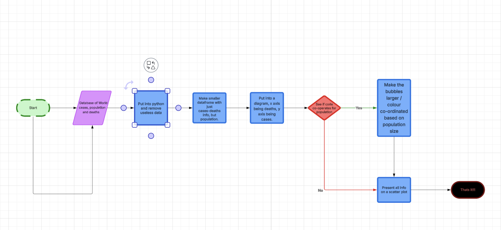

Planning & Design
Flowchart/Pseudocode
As can be seen, our code's logic wasn't overly complicated - it is essentially just a linear series of actions: get dataframe, clean data, create graph, plot data on graph, annotate and size data.
Our final code ended up a little more complicated, as we added in algorithms to handle error, and to find useful statistical data points, but the final code was still extremely linear